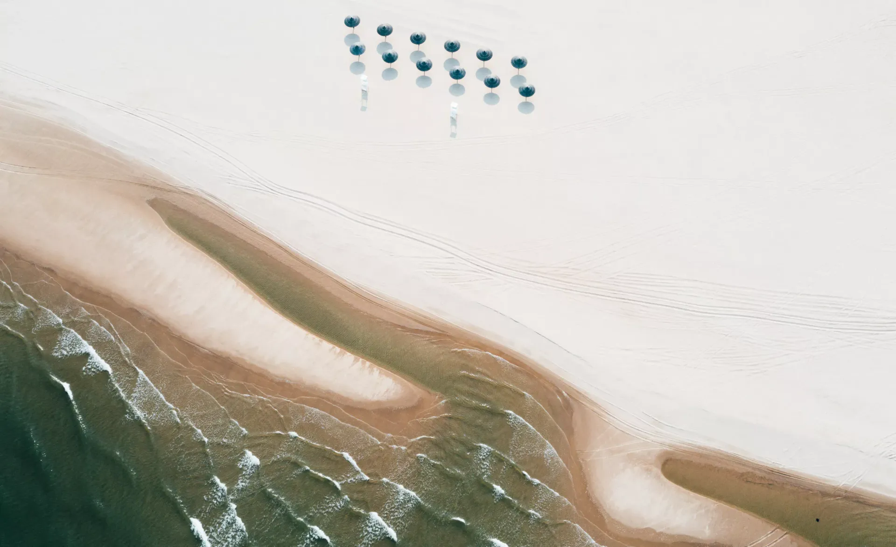

10.0416:00—17:00
亲子候选 · 需确认1岁入场
高德查看地点《大象的迁徙》绘本故事会
北岸雀跃镇滨河大草坪 · 阿那亚App报名。可替换4日下午小镇闲逛；当天去了北岸，5日就留在南区。

2026.10.03 — 10.07 · 北京自驾 · 5天4晚
按区域找地点，点按钮打开高德地图。这里是地点索引，距离与路线以导航为准。
住宿暂按家人说明的四期安排，但房源位置图的分期标签有出入。以房东发的楼栋入口定位为准。不要用“四期”的搜索结果代替房门位置。
四期小镇北区与阿那亚北岸是不同位置。跨区活动先查阿那亚App“园区巴士”。
已结合家人提供的“2026国庆假期活动日程”截图校正。下列场次以截图为依据，余位和当天变化仍需在App确认。报名选择“阿那亚·秦皇岛”。
北岸雀跃镇滨河大草坪 · 阿那亚App报名。可替换4日下午小镇闲逛；当天去了北岸，5日就留在南区。
北岸ANAR FC滨河足球场 · 截图注明可现场观看。建议5日午休后去，看20—30分钟，再散步或坐下休息。
阿那亚蜂巢剧场 · 阿那亚App或大麦购票。截图显示4—6日晚间19:30场，3日另有14:30场。1.2米以下谢绝入场，宝宝由家人陪伴，不带进剧场。
4日：Vivace弦乐四重奏；5日：记忆中的国乐新编；6日：秋潮破晓·海畔弦吟；7日：从西西里到布宜诺斯艾利斯。每天两场07:30—08:00、08:20—08:50，阿那亚App预约。
推荐5日08:20场给喜欢熟悉旋律的老人。至少一位家长留住处陪宝宝，另一位陪老人前往；不要求全家早起。1.2米以下谢绝入场。
钢琴、小提琴与萨克斯管。18:00—18:30、19:00—19:30，阿那亚App预约，1.2米以下谢绝入场。到达晚就取消，不压缩入住和宝宝休息。
北岸雀跃镇滨河大草坪，截图注明现场参与。5日下午可与足球观赛择一；宝宝只在大人陪护下看热闹，具体器材年龄限制现场确认。
北岸九期雀跃镇Andmore。夫妻若选择这项活动，可替换海钓或某个下午的闲逛；老人宝宝留在熟悉的生活圈，具体参与条件向活动方确认。
刘符洁个展，阿那亚艺术中心。截图注明节假日正常开放，可作为大人的雨天备选。宝宝入场与推车规则仍需确认。
夫妻海钓3小时 · 外出预留5—6小时
6日暂定 · 5日天气备选 · 尚未订船
优先比较南戴河葡萄岛方向和秦皇岛其他码头。产品名叫“秦皇岛”，不一定从同一码头出发。
已有公开销售的3小时产品，含钓具、鱼饵与船长指导。本次日期、余位和价格需重新询价。
早餐 → 散步20—30分钟 → 回房 → 午餐 → 午休
只走前几天走过的熟路，夫妻手机保持可联系。
这份清单先照顾四期入住、老人熟悉路线和宝宝午休，再挑一两顿值得好好吃的。餐厅选择很多，国庆期间以阿那亚App的营业、排队和预约信息为准。
11:30左右吃午餐，饭后回房休息；晚饭尽量在17:30—18:00开始。实际住处楼栋仍以房东定位为准。
中式主食、吃完容易回房；具体选离住处近的。
本地海味或口味相对温和的一桌菜，最好提前约。
看海或吃西餐；宝宝由家人照看时更从容。
按南北区分布整理。以下是公开指南中的位置，住处离哪家近，以房东楼栋定位和高德路线为准。
四期小镇北区2号楼底商
有蒸饺、汤粥，午饭后回房午休比较顺。
点什么 大馅蒸饺、汤粥
四期小镇南区6号楼底商
椰子鸡风味温和，适合老人和大人同桌。
点什么 椰子鸡、海南简餐、甜品
四期小镇南区底商
主食选择明确，退房日午餐也可作为候选。
点什么 烧鹅饭、云吞面、白切鸡饭
四期小镇南区6号楼底商
想吃汤汤水水时可选，出餐与排队情况看当天。
点什么 牛肉河粉、鸡肉碎米饭
四期小镇北区1号楼底商
披萨与意面比较容易照顾一家人的口味，资料显示设有儿童区。
点什么 披萨、意面
四期南区6号楼、北区2号楼均有门店
上午出门前补充面包，留一份给宝宝午休后同行大人加餐。
点什么 手工面包、甜点
四期小镇北区儿童农庄西侧
适合预订一顿不赶时间的晚餐，海鲜与牛排兼顾。
点什么 意大利海鲜、牛排
上午看完海或礼堂后安排午餐，尽量不要再绕远路。
安澜酒店旁；先核对实际步行路线
面、馄饨等家常选择多，可作海边活动后的简单午餐。
点什么 面食、馄饨、早餐档
D3区域3号楼；先核对实际步行路线
老人想吃中式熟食时优先考虑，假期入场方式先查App。
点什么 担担面、猪脚饭、黄米凉糕
安澜酒店东侧
全家想正式吃一顿秦皇岛风味，可以安排在非海钓日。
点什么 海肠捞饭、烧鱼锅贴饼子、皮皮虾鲜肉盒子
孤独图书馆斜对面
看海一带顺路，适合夫妻或一家人提前预订一顿特色餐。
点什么 西班牙海鲜饭、海鲜面、牛排
苏卡酒店A栋1层
偏当地渔家菜，想吃海鲜又不想专程出园可查。
点什么 当日海鲜、渔家菜
A.HOTEL南侧约100米；另有六期点位
可看当天海鲜并询问加工方式，适合愿意现场挑选的一餐。
点什么 当日鲜货、按店内方式加工
邻里中心商圈
海鲜吃多了换口味，老人也有面食可选。
点什么 兰州小吃、烧烤、小菜
去足球赛或雀跃镇那天再选；四期小镇北区和阿那亚北岸并非同一个地方。
北岸一期（九期）小镇中心
5日若去了北岸，傍晚就近吃一餐再回；不为吃饭专程跨区。
点什么 以当日食堂档口为准
北岸九期雀跃镇 N24
看足球或逛雀跃镇途中买点烘焙，适合短暂停留。
点什么 面包、咖啡
北岸一期（九期）中庭商业街99栋
想在北岸吃本地菜，可与南区店二选一。
点什么 本地菜、当日海鲜
北岸九期雀跃镇 P8
风大或天气凉时可选，注意留足用餐时间。
点什么 涮肉、蔬菜拼盘
先就近：椰品、晓麦穗或 SQUARE。到得晚就吃简单的一餐。
午餐选第三食堂或晓麦穗；晚餐可预订晓·渔村。
午餐仍在住处附近；下午北岸买 Bake No Title，想留下吃晚饭选第八食堂。
夫妻外出前给老人宝宝定好食堂或外送；返园后吃椰品、珍味胜等就近餐。
11:00前退房，午餐选出餐较快的珍味胜、PHO THIN17 或食堂；午饭后返京。
阿那亚官方介绍秦皇岛社区设有9处社区食堂和75家餐饮商户，但节假日部分食堂可能要求身份码；非食堂餐厅一般可用微信或支付宝。阿那亚App“美食→外送”也可作为海钓日老人带娃的备选。每家店的营业、预约、排队和儿童座椅，出发前在App或电话里核对。宝宝继续带熟悉的奶和辅食。
四期住处 → 就近吃饭 → 小镇广场 → 原路回家
3日夫妻带着亲自走一遍。记清楼栋入口、返回方向、最近洗手间和接驳站；累了随时坐下。
暂按家人说明的四期规划，房源图中的分期标签待核对；具体楼栋尚未补充。把房东发的住处定位固定在家庭聊天群里，给老人拍一张入口照片。地图搜“四期”不能代替房门定位。
早餐 → 附近散步 → 回房玩耍 → 午餐 → 午休
只走前几天已经熟悉的路线，不独自带宝宝跨区。散步20—30分钟就可以回房，不舒服或累了就取消外出。
夫妻出发前交代吃饭与午睡安排，带好手机，约定返回时段。老人不去码头等候。
看海、摸沙、看树和草地。推车走硬化路面，进沙滩时抱娃或用背带，由大人近身陪伴。
暂按11:30午餐、12:30—14:30午休。宝宝睡得更早或更久，活动就顺延或取消。
不安排完整营队或长时间看戏。故事会先确认1岁能否参加，不要求听满一小时。
随身带尿布、湿巾、换洗衣物、熟悉的奶和辅食、薄毯与防风外套。母婴室和无障碍入口向房东或场馆确认。
取消沙滩久留、北岸户外活动与无法成行的海钓。改为四期附近吃饭、书店短停、住处玩耍。大人看展或看戏时，先安排宝宝陪护。
美术馆与剧场先查开放、预约、年龄和推车规则，没有合适场次就安心回房休息。
勾选仅保存在当前浏览器，可以逐项检查。